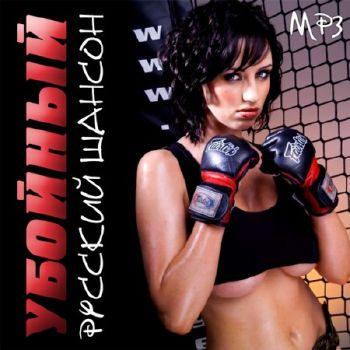

|

A chanson ("song", from Latin cantio, gen. cantionis) is in general any lyric-driven French song, usually polyphonic and secular. A singer specializing in chansons is known as a "chanteur" (male) or "chanteuse" (female); a collection of chansons, especially from the late Middle Ages and Renaissance, is also known as a chansonnier.
Chanson de geste:
The earliest chansons were the epic poems performed to simple monophonic melodies by a professional class of jongleurs or ménestrels. These usually recounted the famous deeds (geste) of past heroes, legendary and semi-historical. The Song of Roland is the most famous of these, but in general the chansons de geste are studied as literature since very little of their music survives.
Chanson courtoise:
The chanson courtoise or grand chant was an early form of monophonic chanson, the chief lyric poetic genre of the trouvères. It was an adaptation to Old French of the Occitan canso. It was practised in the twelfth and thirteenth centuries. Thematically, as its name implies, it was a song of courtly love, written usually by a man to his noble lover. Some later chansons were polyphonic and some had refrains and were called chansons avec des refrains. A Crusade song was known as a chanson de croisade.
Burgundian chanson:
In its typical specialized usage, the word chanson refers to a polyphonic French song of the late Middle Ages and Renaissance. Early chansons tended to be in one of the formes fixes—ballade, rondeau or virelai (formerly the chanson baladée)—though some composers later set popular poetry in a variety of forms. The earliest chansons were for two, three or four voices, with first three becoming the norm, expanding to four voices by the sixteenth century. Sometimes, the singers were accompanied by instruments.
The first important composer of chansons was Guillaume de Machaut, who composed three-voice works in the formes fixes during the 14th century. Guillaume Dufay and Gilles Binchois, who wrote so-called Burgundian chansons (because they were from the area known as Burgundy), were the most important chanson composers of the next generation (c. 1420-1470). Their chansons, while somewhat simple in style, are also generally in three voices with a structural tenor. Musicologist David Fallows includes the Burgundian repertoire in A Catalogue of Polyphonic Songs 1415-1480. These works are typically still 3 voices, with an active upper voice (discantus) pitched above two lower voices (tenor and altus) usually sharing the same range.
Later 15th- and early 16th-century figures in the genre included Johannes Ockeghem and Josquin des Prez, whose works cease to be constrained by formes fixes and begin to feature a pervading imitation (all voices sharing material and moving at similar speeds), similar to that found in contemporary motets and liturgical music. The first book of music printed from movable type was Harmonice Musices Odhecaton, a collection of ninety-six chansons by many composers, published in Venice in 1501 by Ottaviano Petrucci.
Parisian chanson:
Beginning in the late 1520s through mid- century, Claudin de Sermisy and Clément Janequin were composers of so-called Parisian chansons, which also abandoned the formes fixes, often featured four voices, and were in a simpler, more homophonic style. This genre sometimes featured music that was meant to be evocative of certain imagery such as birds or the marketplace. Many of these Parisian works were published by Pierre Attaingnant. Composers of their generation, as well as later composers, such as Orlando de Lassus, were influenced by the Italian madrigal. Many early instrumental works were ornamented variations (diminutions) on chansons, with this genre becoming the canzone, a progenitor of the sonata.
Modern chanson:
French solo song developed in the late 16th century, probably from the aforementioned Parisian works. During the 17th century, the air de cour, chanson pour boire and other like genres, generally accompanied by lute or keyboard, flourished, with contributions by such composers as Antoine Boesset, Denis Gaultier, Michel Lambert and Michel-Richard de Lalande.
During the 18th century, vocal music in France was dominated by opera, but solo song underwent a renaissance in the 19th century, first with salon melodies and then by mid-century with highly sophisticated works influenced by the German Lieder, which had been introduced into the country. Louis Niedermeyer, under the particular spell of Schubert, was a pivotal figure in this movement, followed by Édouard Lalo, Felicien David and many others.
Another offshoot of chanson, called chanson réaliste (realist song), was a popular musical genre in France, primarily from the 1880s until the end of World War II. Born of the cafés-concerts and cabarets of the Montmartre district of Paris and influenced by literary realism and the naturalist movements in literature and theatre, chanson réaliste was a musical style which was mainly performed by women and dealt with the lives of Paris's poor and working class. Among the better-known performers of the genre are Damia, Fréhel, and Édith Piaf.
Later 19th-century composers of French art songs, known as mélodie and not chanson, included Ernest Chausson, Emmanuel Chabrier, Gabriel Fauré, and Claude Debussy, while many 20th-century and current French composers have continued this strong tradition.
Nouvelle chanson:
In France today "chanson" or "chanson française" typically refers to the music of singers such as Charles Trenet, Guy Béart, Jacques Brel, Jean Ferrat, Georges Brassens, Édith Piaf, Charles Aznavour, Barbara, Dalida, Serge Reggiani, Léo Ferré, Mireille Mathieu and Serge Gainsbourg and more recently Mano Solo, Dominique A, Matthieu Chedid, Benjamin Biolay, Jean-Louis Murat, Miossec, Mathieu Boogaerts, Daniel Darc, Vincent Delerm, Maurane, Zaz, Bénabar, Renan Luce, Olivia Ruiz. Chanson can be distinguished from the rest of French "pop" music by following the rhythms of French language, rather than those of English, and a higher standard for lyrics.
|